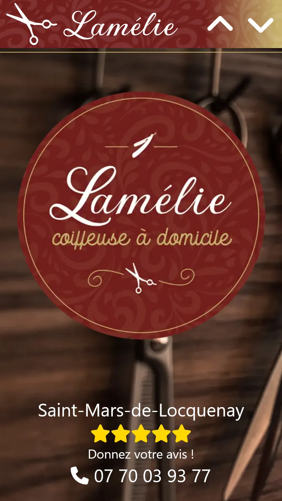
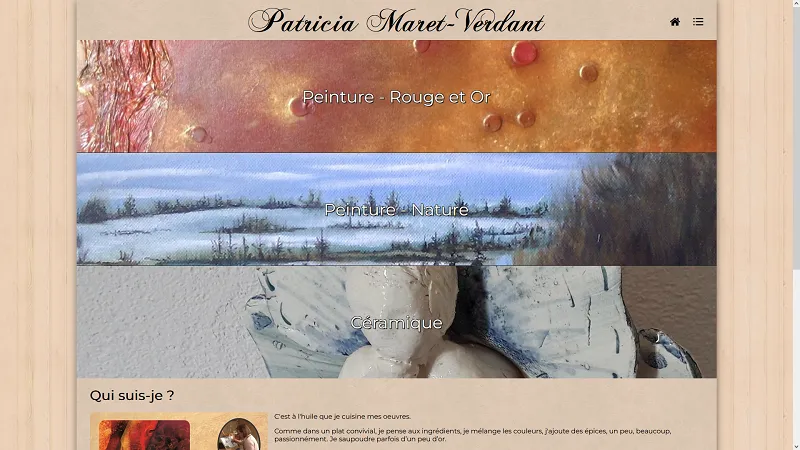

A WebApp allowing
Magic the Gathering: Arena
players to draft with others players using card they own in the game
(determined by parsing the game's logs). Built using Node.js (express and
socket.io) on the backend and Vue.js on the
frontend.
Little library wrapping OpenGL object and functionality. This is intended
for personal use and in early stage so I can't recommend its use (also, I'm
not satisfied with the current API, it may change significantly).
Repository
SenBoy
A basic GameBoy/GameBoy Color emulator, more details on the
GitHub repository. Binaries
are available
here for download.
You can also try a web version
right here (WASM version). Please note however that this is a only a quick port done in only a few
hours.
Small business website : Simple
frontshop using Vuejs with a small backend retrieving informations,
rating and photos, from their Google Business record in real time.
Special attention was given to the site responsiveness, as it was meant
to be perfectly usable on mobile.

Artist Portfolio : Generated
from data stored in a json file using a python script. Some simple
javascript to load and display each portfolio item.
Artist Homepage : Written in PHP,
data stored in a MySQL database. 3D Model viewer written in javascript
(threejs).
It was later re-written using VueJS, still using a PHP backend.

This very website : keeping things as simple as possible.
University projects
Cyaprana
Robotics project in first year of master's degree with 7 other students. I
worked on video analysis (3D tracking) with OpenCV, data coming from up to 5
cameras.
More informations (in French).
Jump'n'run
2D platform game done in team with
Posva during the 2nd year of college.
We both touched pretty much every piece of the program, but I mostly worked
on the physics engine and the level editor.
More informations/Repository
(French)

 GitHub
GitHub
{kind=link}
{kind=link}
{kind=link}
{kind=link}
{kind=link}
{kind=link}
{kind=link}
{kind=link}
{kind=link}
{kind=link}